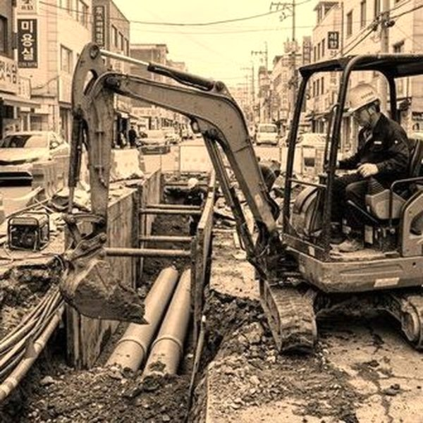
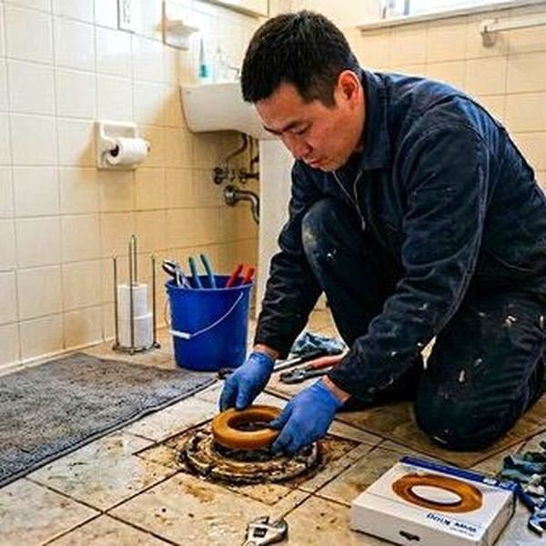
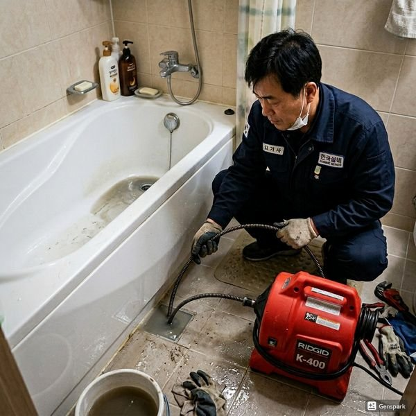

제우스시설관리 | 2025년 4월

시골 지역이나 단독주택에서 사용하는 정화조는 하수를 자체 처리하는 중요한 시설입니다. 올바른 관리로 수명을 연장하고 비용을 절약할 수 있습니다.
정화조는 생활 하수를 미생물이 분해하여 처리하는 시스템입니다. 크게 3가지 실(chamber)로 나뉩니다:
• 첫 번째 실 - 고형물 침전
• 두 번째 실 - 미생물에 의한 분해
• 세 번째 실 - 처리수 저장
이 과정이 정상 작동해야 악취와 역류 문제가 없습니다.
가정 규모: 4인 가족 기준 연 1~2회 (6~12개월마다)
식당/카페: 월 1회 필수 (유지 보수비 적음)
외출이 많은 집: 연 1회 (물 사용량이 적으면 청소 주기 연장 가능)
정화조가 80% 차면 청소해야 하는데, 육안 확인이 어려우므로 정기적인 전문 점검이 필수입니다.
• 변기 물이 천천히 내려감
• 욕실에서 하수 냄새 발생
• 정화조 주변에서 물이 솟아남
• 배수구에서 가스 냄새 (부글거리는 소리)
1. 기름/음식물 절대 금지
정화조 내 미생물은 음식물과 기름에 약합니다. 기름과 음식물은 반드시 쓰레기통에 버려야 합니다.
2. 화학제품 사용 최소화
화학 세정제, 표백제, 살균제는 정화조 내 미생물을 죽여 처리 효율을 떨어뜨립니다. 가능하면 천연 세제를 사용하세요.
3. 과도한 물 사용 피하기
한 번에 대량의 물이 들어오면 정화조 처리 시간이 부족해 미처리수가 흘러나갑니다.
4. 정기적인 청소 일정 관리
청소 지난 정화조는 효율이 급격히 떨어집니다. 달력에 표시하고 주기적으로 청소받으세요.
• 설치 후 20년 이상 경과
• 자주 막히고 냄새가 계속 남
• 균열이나 손상 확인
정화조 교체는 큰 비용이 들지만, 초기 점검과 정기 청소로 수명을 10년 이상 연장할 수 있습니다.

